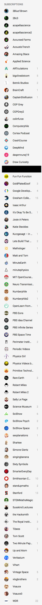

Attention ec — ooh, a squirrel
I think the zeitgeist seems to be moving away from filling all our time with things and being hyper-connected, and towards rarer more meaningful connections.
It's… disturbing and interesting at the same time, to realise that the attention-grabbing nature of all the things I enjoy has been designed to perfectly fit me, and all of us, by the same survival-of-the-fittest logic that causes natural evolution.
That which best grabs the attention, thrives. That which isn't so powerful, doesn't.
And when we develop strategies to defend ourselves against certain attention-grabbers, the attention-grabbers which use different approaches that we have not yet defended against take the place of those we have protected ourselves from.
A memetic arms race, between mental hygiene and thought germs.
I've done stuff in the last three months, but that stuff hasn't included "finish editing next draft of my novel". I could've, if only I'd made time for that instead of drinking from the (effectively) bottomless well of high quality YouTube content (see side-image for my active subscriptions; I also have to make a conscious effort to not click on the interesting clips from TV shows that probably shouldn't even be on YouTube in the first place). Even though I watch most content sped up to a factor of 1.5 or 2, I can barely find time for all the new YouTube content I care about and do my online language courses and make time for the other things like finding a job.
Editing my novel? It's right there, on my task list… but I barely touch it, even though it's fulfilling to work on it, and fun to re-read. I don't know if this is ego depletion or akrasia or addiction, but whatever it is, it's an undesirable state.
I'm vulnerable to comments sections, too. Of course, I can do something about those — when I notice myself falling into a trap, I can block a relevant domain name in my hosts file. I have a lot of stuff in that file these days, and even then I slip up a bit because I can't edit my iPhones hosts file.
Now that I know there's a problem, I'm working on it… just like everyone else. The irony is, by disconnecting from the hyper-connected always-on parts of the internet, we're not around to help each other when we slip up.
- CGPGrey: Thinking About Attention -- Walk with Me — https://www.youtube.com/watch?v=wf2VxeIm1no
- CGPGrey: This Video Will Make You Angry — https://www.youtube.com/watch?v=rE3j_RHkqJc
- Elsewhere on this blog: Hyperinflation in the attention economy: what succeeds adverts?
Original post: https://kitsunesoftware.wordpress.com/2018/09/16/attention-ec-ooh-a-squirrel/
Original post timestamp: Sun, 16 Sep 2018 18:46:48 +0000
Tags: attention economy, social media, Technology
Categories: Health, Minds, Psychology